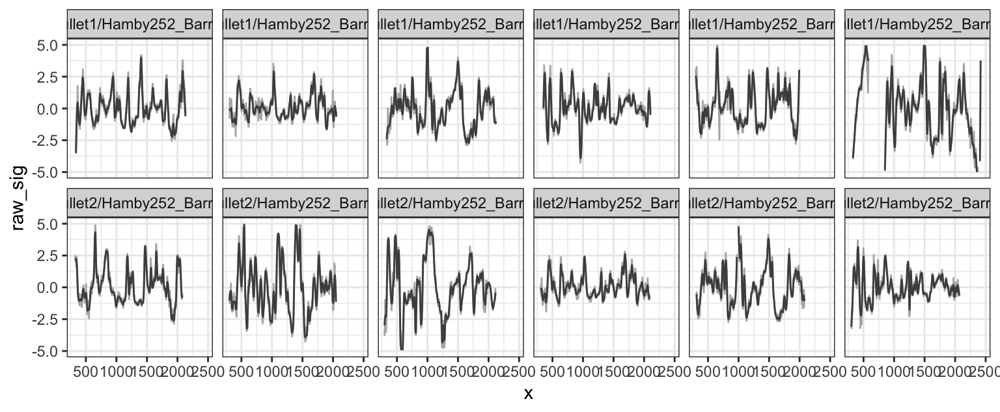
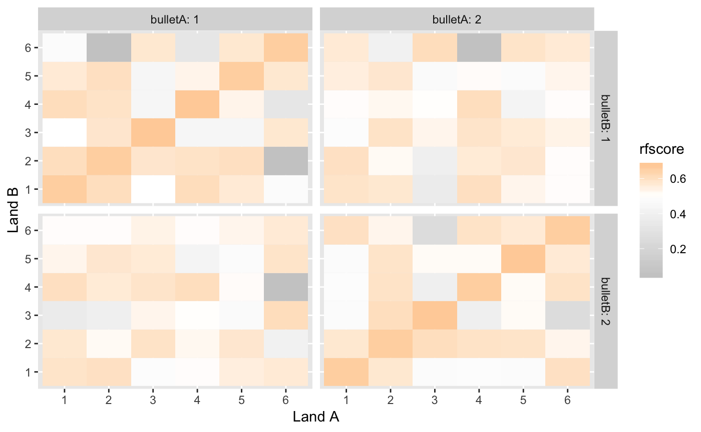

Analyze bullet striations using nonparametric methods
Comparing lands from two bullets
Stria comparisons between bullets are based on land-to-land comparisons.
- Load libraries
-
bulletxtrctronly works on x3p files. See packagex3ptoolsat https://heike.github.io/x3ptools/ for ways to convert different file formats into x3p standard files. The NIST Research Ballistics Toolmarks data base (NRBTD)[https://tsapps.nist.gov/NRBTD/Studies/Search] provides access to scans of bullets and cartridge cases from various case studies.
In this tutorial, we’ll work with two bullets from a single barrel of the Hamby 252 data set. Links to the 12 x3p files are provided in the hamby252demo object.
If instead we wanted to download the files into a folder named “data” in our working directory, we would run this sequence of commands:
if (!dir.exists("data")) {
dir.create("data")
}
if (!file.exists("data/Bullet1/Hamby252_Barrel1_Bullet1_Land1.x3p")) {
NRBTDsample_download("data")
}
b1 <- read_bullet("data/Bullet1", "x3p")
b2 <- read_bullet("data/Bullet2", "x3p")Combine the results into a single data frame:
b1$bullet <- 1
b1$land <- paste0("1-", 1:6)
b2$bullet <- 2
b2$land <- paste0("2-", 1:6)
bullets <- rbind(b1, b2)We expect data to be recorded at the micron level. The scans posted give measurements in meters:
## [1] 1.5625e-06## [1] 1.5625e-06## Min. 1st Qu. Median Mean 3rd Qu. Max. NA's
## 0 0 0 0 0 0 24829Change measurements to microns:
bullets <- bullets %>% mutate(
x3p = x3p %>% purrr::map(.f = function(x) {
# make sure all measurements are in microns
x$surface.matrix <- x$surface.matrix*10^6
x$header.info$incrementY <- x$header.info$incrementY*10^6
x$header.info$incrementX <- x$header.info$incrementX*10^6
x
})
)## [1] 1.5625## [1] 1.5625## Min. 1st Qu. Median Mean 3rd Qu. Max. NA's
## 1.513 117.626 166.723 155.933 199.429 216.341 24829We are working under the assumption that the scans are aligned such that the bottom of the bullet (heel) are at the bottom (y = 0) of the image, and the land engraved area is displayed left to right from groove to groove, i.e. we are assuming that (0,0) is in the bottom left corner of the image. In scans where no adjustment was made for the barrel’s twist (not recommended) the twist will be visible in the image.
The raw scan needs to be flipped such that the heel is along the bottom of the image rather than along the left hand side. 
# turn the scans such that (0,0) is bottom left
bullets <- bullets %>% mutate(
x3p = x3p %>% purrr::map(.f = function(x) x %>%
rotate_x3p(angle = -90) %>%
y_flip_x3p())
) Scan after the transformation: a clear right twist is visible in the right slant of striae and grooves.

Scan after rotation, a clear right twist is visible in the right slant of the left and right shoulders.
- Get the ideal cross sections
bullets <- bullets %>% mutate(
crosscut = x3p %>% purrr::map_dbl(.f = x3p_crosscut_optimize)
)
# now extract the crosscuts
bullets <- bullets %>% mutate(
ccdata = purrr::map2(.x = x3p, .y = crosscut,
.f = x3p_crosscut)
)- Get the groove locations
bullets <- bullets %>% mutate(
grooves = ccdata %>%
purrr::map(.f = cc_locate_grooves, method = "rollapply",
adjust = 30, return_plot = TRUE)
)
bullets$grooves[[1]]## $groove
## [1] 246.875 2159.375
##
## $plot
- Extract signatures
bullets <- bullets %>% mutate(
sigs = purrr::map2(
.x = ccdata, .y = grooves,
.f = function(x, y) {
cc_get_signature(
ccdata = x, grooves = y, span1 = 0.75, span2 = 0.03)
})
)signatures <- bullets %>% select(source, sigs) %>% tidyr::unnest()
signatures %>%
filter(!is.na(sig),!is.na(raw_sig)) %>%
ggplot(aes(x = x)) +
geom_line(aes(y = raw_sig), colour = "grey70") +
geom_line(aes(y = sig), colour = "grey30") +
facet_wrap(~source, ncol = 6) +
ylim(c(-5,5)) +
theme_bw()## Warning: Removed 25 rows containing missing values (geom_path).## Warning: Removed 38 rows containing missing values (geom_path).
- Detect peaks and valleys in the aligned signatures
lands <- unique(bullets$land)
comparisons <- data.frame(
expand.grid(landA = lands, landB = lands), stringsAsFactors = FALSE)
# comparisons <- comparisons %>% filter(b1 != b2)
comparisons <- comparisons %>% mutate(
aligned = purrr::map2(.x = landA, .y = landB, .f = function(xx, yy) {
land1 <- bullets$sigs[bullets$land == xx][[1]]
land2 <- bullets$sigs[bullets$land == yy][[1]]
# land1$bullet <- "first-land"
# land2$bullet <- "second-land"
sig_align(land1$sig, land2$sig)
})
)Some features are based on aligned signatures:
comparisons <- comparisons %>% mutate(
ccf0 = aligned %>%
purrr::map_dbl(.f = function(x) extract_feature_ccf(x$bullet)),
lag0 = aligned %>%
purrr::map_dbl(.f = function(x) extract_feature_lag(x$bullet)),
D0 = aligned %>%
purrr::map_dbl(.f = function(x) extract_feature_D(x$bullet)),
length0 = aligned %>%
purrr::map_dbl(.f = function(x) extract_feature_length(x$bullet)),
overlap0 = aligned %>%
purrr::map_dbl(.f = function(x) extract_feature_overlap(x$bullet))
)Other features need an evaluation of striation marks between two aligned signatures:
comparisons <- comparisons %>% mutate(
striae = aligned %>% purrr::map(.f = sig_cms_max, span = 75)
)comparisons <- comparisons %>% mutate(
matches0 = striae %>% purrr::map_dbl(.f = function(s) {
bulletxtrctr:::extract_feature_n_striae(s$lines, type = "peaks", match = TRUE)
}),
mismatches0 = striae %>% purrr::map_dbl(.f = function(s) {
bulletxtrctr:::extract_feature_n_striae(s$lines, type = "peaks", match = FALSE)
})
)## ccf and lag are extracted below
# comparisons <- comparisons %>% mutate(
# ccf = results %>% purrr::map_dbl(.f = function(x) x$ccf),
# lag = results %>% purrr::map_dbl(.f = function(x) x$lag) #,
# # cms = results %>% purrr::map_dbl(.f = function(x) x$maxCMS)
# )
comparisons <- comparisons %>% mutate(
land1 = landA, land2 = landB,
bulletA = gsub("([1-2])-([1-6])","\\1",land1),
bulletB = gsub("([1-2])-([1-6])","\\1",land2),
landA = gsub("([1-2])-([1-6])","\\2",land1),
landB = gsub("([1-2])-([1-6])","\\2",land2)
)- Extract Features
comparisons <- comparisons %>% mutate(
features = striae %>% purrr::map(.f = extract_features_all_legacy)
)
comparisons <- comparisons %>% mutate(
features_new = purrr::map2(.x = aligned, .y= striae, .f = extract_features_all)
)
comparisons <- comparisons %>% tidyr::unnest(features)
# quick visualization:
comparisons %>%
ggplot(aes(x = landA, y = landB, fill = ccf)) +
geom_tile() +
scale_fill_gradient2(low = "grey80", high = "darkorange",
midpoint = 0.5) +
facet_grid(bulletB~bulletA, labeller = "label_both") +
xlab("Land A") +
ylab("Land B")
- Get Score predictions for each land to land comparison
comparisons$rfscore <- predict(bulletr::rtrees, newdata = comparisons, type = "prob")[,2]
comparisons %>%
ggplot(aes(x = landA, y = landB, fill = rfscore)) +
geom_tile() +
scale_fill_gradient2(low = "grey80", high = "darkorange",
midpoint = .5) +
facet_grid(bulletB~bulletA, labeller = "label_both") +
xlab("Land A") +
ylab("Land B")
- Determine bullet-to-bullet scores
parse_number <- readr::parse_number
bullet_scores <- comparisons %>% group_by(bulletA, bulletB) %>% tidyr::nest()
bullet_scores <- bullet_scores %>% mutate(
bullet_score = data %>% purrr::map_dbl(
.f = function(d) max(compute_average_scores(land1 = d$landA, land2 = d$landB, d$rfscore)))
)
bullet_scores %>% select(-data)## # A tibble: 4 x 3
## bulletA bulletB bullet_score
## <chr> <chr> <dbl>
## 1 1 1 0.982
## 2 2 1 0.674
## 3 1 2 0.674
## 4 2 2 0.988An interactive interface for doing comparisons is available https://oaiti.org/apps/bulletmatcher/